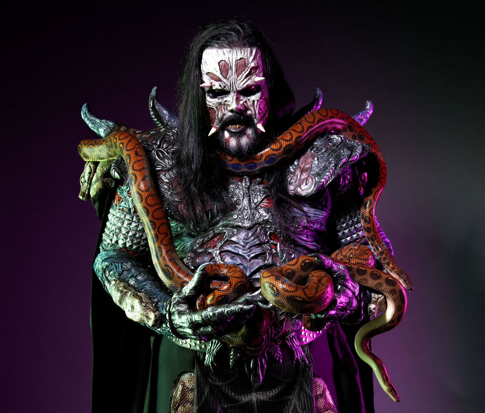
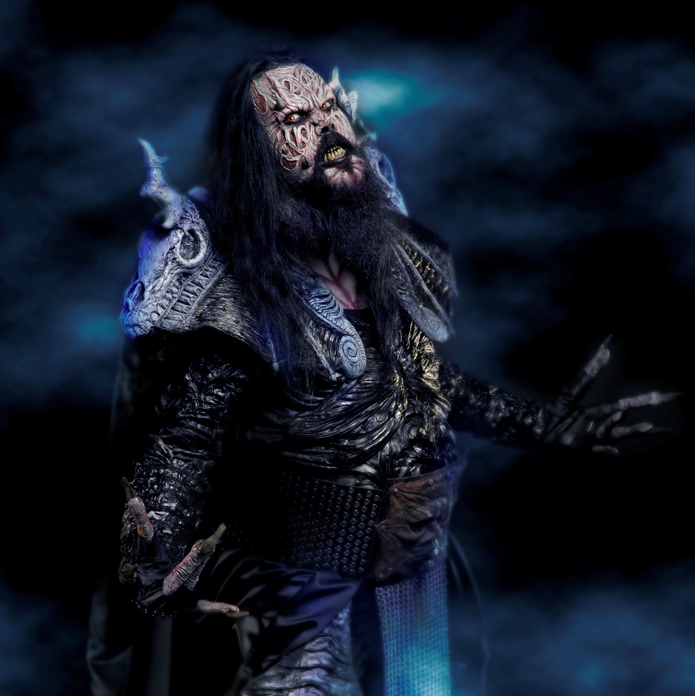
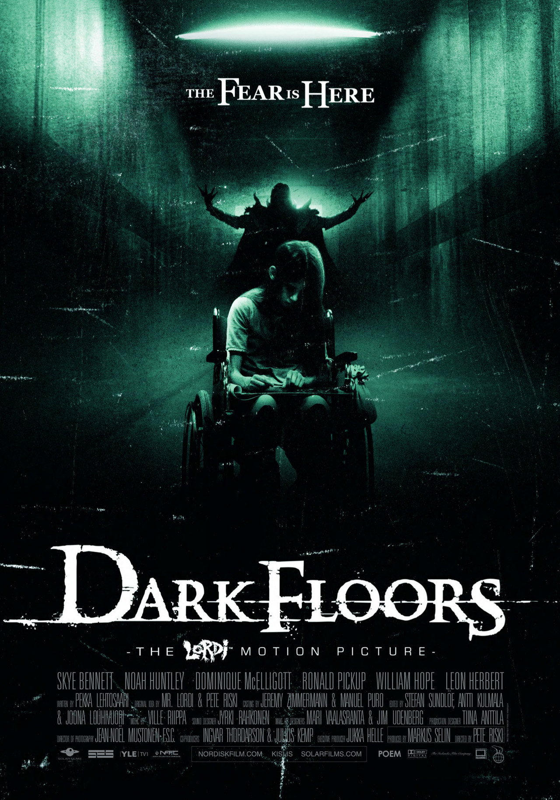

Mr. Lordi
Mr. Lordi is best known as the lead vocalist for the heavy metal, hard rock band Lordi.
In the group, he is responsible for writing songs and creating all masks, costumes, graphics and decorations.
Mr. Lordi has written songs and painted covers for many bands and artists such as Rotten Sound,
Jope Ruonansuu, Domination Black, Grandevils and Agnes Pihlava. He also had several art exhibitions in Finland.
In all of Mr. Lordi's promotional photos, his face is obscured by a mask and stage makeup.
However, many tabloids have published fake photographs of his face without a mask. This published
photo of his face without a mask was taken in the early 1990s when he was head of Kiss Army Finland.


Character story
Like the other Lordi members, Mr. Lordi also has a fictional backstory and appears as a
fictional monster in Lordi's comics and music videos.
According to one theory, Mr. Lordy has searched for His One True Love for centuries,
but never found it. Time traveler Kalmaged reveals that Mr. Lordi has integrated into the
Earth's magnetic field and thus controls the entire planet and can now easily travel between
different dimensions.
Mr. Lordi personally gathered the other members of the group as allies in
san interdimensional war against his enemies.
The film gained fame thanks to the participation of
The Lordi
Dark Floors – The Lordi Motion Picture is an 2008 English-language
Finnish horror film that features Lordi band members playing the monsters.
Mr Lordi has
also designed the film's logo. The film was released in February 2008 and stars William Hope,
Leon Herbert, Philip Bretherton, Ronald Pickup, and Skye Bennett.
A new Lordi song, Beast Loose
in Paradise, is featured in the end credits of the film.
More information
